A telemática é a comunicação à distância de um ou mais conjuntos de serviços informáticos fornecidos por meio de uma rede de telecomunicações.
Em outras palavras, pode-se defini-la como conjunto de tecnologias da informação e da comunicação resultante da junção entre os recursos das telecomunicações (telefonia, satélite, cabo, fibras ópticas, etc.) e da informática (computadores, periféricos, softwares e sistemas de redes), que possibilita o processamento, a compressão, o armazenamento e a comunicação de grandes quantidades de dados (nos formatos texto, imagem, som, etc.), em curto prazo de tempo, entre usuários localizados em qualquer ponto do globo.
Tem-se, assim, um manancial de informações que se armazena e circula sob os mais variados formatos pelas redes de telemática, as quais, dadas às facili dades de acesso por qualquer pessoa, ocasionadas pelas constantes inovações tecnológicas, passaram também a ser uma rica fonte para obtenção de elementos de interesse a uma investigação.
A categorização desses tipos de informações não é consenso legislativo nem doutrinário, por vezes sendo empregado o termo “registro telemático” para abranger não somente os rastros de informações deixadas pelo acesso à internet e seus aplicativos, mas também para se referir ao conteúdo de dados armazenados e transmitidos. Ocasionalmente, será detectada a expressão “dado” sendo tratada como sinônimo de informações criadas, transmitidas ou mantidas em uma rede telemática. A título de exemplo, a Lei n.º 12.850/13 não adota a melhor técnica legislativa, ao empregar indiscriminadamente termos e significados distintos como sinônimos.
Para fins de balizamento de nossos estudos, antes de tudo, é preciso ter em mente que a telemática nos fornece uma gama imensa de tipos de informações diferentes – estas sim gênero –, cuja identificação da espécie é de fundamental importância para definir o tipo de diligência que obtenção dos dados necessários à instrução de uma investigação.
Sem dúvidas, a identificação do tipo de dado ou informação e do responsável pelo seu fornecimento é crucial para o avanço de uma investigação que se pretenda ser instruída com frutos da quebra de um sigilo telemático.
Dessa forma, para fins didáticos, será tomado como gênero a informação de origem telemática ou dado telemático, que poderão ser divididos em dados de registros e dados stricto sensu, os quais, por seu turno, podem ser subdivididos em:
1. Registros, divididos em:
2. Dados, divididos em:
É de se observar que a classificação não é estanque, nada impedindo, por exemplo, que um tipo de arquivo referente a uma comunicação pretérita seja considerado dado estático.
Neste ponto, importante realizar outra importante diferenciação conceitual. O acesso a informações e dados telemáticos difere da interceptação telemática em si, tendo em vista que esta diz respeito ao fluxo dinâmico de comunicações em tempo real, ao passo que as informações e os dados consistem somente no material já armazenadas nos servidores do prestador de serviços ou contidos em memória de dispositivos.
Retornando, portanto, aos dados e informações, faremos distinção entre pro vedores de acesso e provedores de serviço na internet para serem corretamente identificados seus detentores. Essa distinção classificatória revela-se imprescindível, uma vez que o Marco Civil da Internet (Lei nº 12.965/2014) estabelece regimes de responsabilidade diferenciados para provedores de conexão (Art. 18) e pro vedores de aplicações (Arts. 19 e 21), justificando sua necessidade no contexto investigativo e analítico.
O registro de conexão (logs) é o conjunto de informações referentes à data e hora de início e término de uma conexão à internet, sua duração e o endereço IP utilizado pelo terminal para o acesso e/ou envio e recebimento de pacotes de dados. Geralmente, quem detêm tais tipos de registros são as empresas da área de estrutura, quais sejam, concessionárias da área de telecomunicações que prestam serviços de fornecimento de internet. Em outras palavras, são os provedores de conexão (Vivo Fibra, Claro Net, etc).
Já o registro de acesso a aplicações de internet, por sua vez, é o conjunto de informações referentes à data e hora de uso de uma determinada aplicação de internet a partir de um determinado endereço IP. Simplificando para fins didáticos: os registros da aplicação da internet são as informações deixadas a partir do acesso às funcionalidades e aplicativos disponíveis da internet (páginas, aplicativos, plataformas, etc.). No geral, as detentoras desses tipos de informações são as empresas de tecnologia, também nomeadas de provedores de aplicação (Instagram, Facebook, WhatsApp, etc).
Por imperativo legal da Lei n.º 12.965/14 (art. 7º, inc. II e III, e art. 15, parágrafo 3º) - Marco Civil da Internet - tanto os registros de conexão quanto de aplicação estão protegidos por cláusula de reserva jurisdicional, cabendo ao delegado de polícia representar pela quebra do sigilo correspondente.
No que se refere à guarda dos registros de conexão à internet (Ex. Vivo Fibra, Claro Net etc.), o art. 13 do citado diploma estabelece que incumbe ao administrador de sistema autônomo respectivo o dever de manter os registros de conexão, sob sigilo, em ambiente controlado e de segurança, pelo prazo de um ano, sendo possível ao Delegado de Polícia Federal solicitar a preservação desses dados por um período até maior, por efeito do parágrafo 2º, do art. 10, da Lei n.º 12.965/14.
A legislação brasileira sobre Internet (Marco Civil da Internet) permite que auto ridades policiais, administrativas ou o Ministério Público solicitem cautelarmente a preservação de registros eletrônicos. Em outras palavras, essas autoridades podem requisitar que provedores mantenham registros de conexão ou de acesso por um período superior ao previsto em lei, para evitar que sejam apagados antes da investigação conseguir uma ordem judicial. Por exemplo, registros de conexão (dados de acesso à Internet mantidos por provedores de conexão, como no caso da Claro Net) são guardados por 1 ano por obrigação legal, e registros de acesso a aplicações (logs mantidos por provedores de aplicações, como sites e redes sociais) por 6 meses; a autoridade pode requisitar que esses prazos sejam estendidos além do normal (art. 13, §2º e art. 15, §2º do Marco Civil da Internet). Importante frisar que essa preservação inicial não é o mesmo que acesso ao conteúdo: trata-se somente de “congelar” os dados nos servidores do provedor, evitando sua destruição, até que se obtenha autorização para acessá-los.
Quando se trata do conteúdo de contas em nuvem (por exemplo, arquivos em serviços de armazenamento online, e-mails ou mensagens armazenadas por um provedor), a situação é mais delicada. Guardar ou preservar (congelar) o conteúdo completo de uma conta é geralmente visto como uma medida invasiva que requer supervisão judicial.
O Supremo Tribunal Federal (STF) já decidiu que é ilegal preservar o conteúdo de contas eletrônicas sem autorização judicial prévia, chegando a anular provas obtidas dessa forma. Um caso emblemático foi relatado pelo Ministro Ricardo Lewandowski, que anulou provas obtidas pelo congelamento (preservação) do conteúdo de contas de e-mail de uma investigada, efetuado sem prévia autorização do Judiciário, em investigação de irregularidades no Detran do Paraná (decisão no Habeas Corpus nº 222141). Essa decisão deixa claro que o acesso ou mesmo a preservação de dados privados armazenados em nuvem, sem ordem judicial, pode violar direitos e comprometer a validade da prova. Em resumo, para preservar conteúdo armazenado na nuvem de alguém, o caminho seguro é obter antes uma autorização judicial.
Apesar do entendimento acima, não há consenso pleno no Judiciário brasileiro sobre o tema. Muitas operações policiais já utilizaram a requisição direta de preservação de conteúdo armazenado (por exemplo, enviando ofícios a prove dores para congelar conteúdo de contas) sem prévia autorização judicial, e não tiveram essa prova anulada posteriormente. Instâncias como o Superior Tribunal de Justiça (STJ) entendem que o simples congelamento (preservação) de dados pela autoridade, sem acesso imediato a eles, não fere a lei, desde que o acesso efetivo aos dados ocorra somente após ordem judicial.
Em decisão de 2022, a 6ª Turma do STJ afirmou justamente que o provimento de preservar dados pode ser atendido pelo provedor sem decisão judicial prévia, diferentemente do pedido de entrega dos dados em si – neste, sim, exige-se autorização do juiz. Ou seja, para parte da jurisprudência, o pedido de preserva ção em si não precisa de autorização inicial, contanto que a autoridade busque posteriormente a validação judicial antes de acessar o conteúdo. Essa divergência revela que o entendimento jurídico não é uniforme. Cabe ao investigador ponderar os riscos: uma requisição direta de preservação de dados que contêm o conteúdo pode acelerar a investigação e evitar perda de evidências, porém existe o risco de a prova ser questionada ou invalidada mais tarde, dependendo de como os tribunais interpretarem a legalidade dessa medida.
Considerando a natureza volátil dos dados eletrônicos, principalmente os armazenados em ambientes de nuvem, é fundamental que o Delegado de Polícia Federal atue com celeridade e cautela na adoção de medidas investigativas.
Em resumo, quando a investigação tratar da preservação de registros de acesso à internet, como logs de conexão (endereços IP, horários de acesso) ou logs de acesso a aplicações, o Delegado poderá, nos termos do Marco Civil da Internet (arts. 13, §2º e 15, §2º), requisitar diretamente a preservação desses dados aos respectivos provedores de conexão (ex.: Vivo Fibra, Claro Net) ou de aplicação (ex.: Facebook, Instagram, WhatsApp). Nesses casos, a requisição de preservação não exige autorização judicial prévia. No entanto, para acessar esses registros, é obrigatória a representação posterior ao Poder Judiciário, conforme preveem os §§ 3º e 5º do art. 13 da mesma lei.
Por outro lado, se o objetivo for alcançar o conteúdo armazenado em contas pessoais — como mensagens, e-mails, fotografias, arquivos ou conversas salvas em serviços de nuvem — a melhor prática é que o Delegado represente direta mente ao juiz para o acesso ao conteúdo, evitando a adoção de duas etapas (preservação e posterior acesso), o que pode atrasar a investigação sem ganho jurídico relevante. Além disso, não é recomendável requisitar diretamente aos provedores a preservação de conteúdos, pois decisões recentes, como no HC 222.141 do STF, reconheceram a nulidade de provas obtidas após preservação de conteúdo realizada sem autorização judicial prévia.
Assim, a conduta mais segura e eficaz para o Delegado:
Essa distinção é essencial para garantir a legalidade da prova, a continuidade da cadeia de custódia e evitar nulidades futuras no processo penal.
Figura 104 - Resumo das guardas dos dados pelos provedores de conexão e provedores
de aplicação e seus prazos legais.
Uma questão que pode confundir o investigador diz respeito ao sigilo do qual se reveste a identificação de um IP. Assim, tem-se que a identificação de um número IP depende de ordem judicial, estando incluída com um tipo de dado de registro (conexão ou aplicação).
Por outro lado, informações referentes à titularidade e usuário desse mesmo IP, cujo número já está identificado, são consideradas dados cadastrais e, por isso, podem ser requisitadas diretamente pelo Delegado de Polícia Federal.
O afastamento do sigilo dos registros de conexão e dos registros de acesso à aplicação exige a demonstração dos seguintes pressupostos de admissibilidade:
O que se percebe na atualidade é o crescimento exponencial das comunica ções ocorrendo no meio digital, em aplicativos e redes sociais, os quais são os principais instrumentos de troca de mensagens, sendo cada vez mais recorrente a necessidade de requisitar informações a provedores de conexão ou aplicação. Tais dados são importantes para a obtenção de elementos, estabelecimentos de vínculos, comprovação de pagamentos e deslocamentos, entre outros, todos necessários ao esclarecimento dos fatos.
Avançando na classificação, há os dados cadastrais. No que se refere a eles, estão relacionados à figura do contratante/usuário (qualificação pessoal, filiação, telefone, endereços) e são passíveis de requisição direta pelo Delegado de Polícia Federal, conforme já estudado em capítulos anteriores.
Os dados não cadastrais são todas as demais informações do ambiente da telemática. Sua definição é geralmente obtida por exclusão, ou seja, aquilo que não for considerado dado cadastral dependerá de ordem judicial para a sua obtenção pela polícia.
O afastamento do sigilo de dados telemáticos é uma ferramenta extremamente útil para investigações, podendo fornecer ao investigador uma ampla gama de elementos, principalmente:
O dado telemático pode estar armazenado virtualmente, mas também no interior de dispositivos físicos, como tablets, celulares, HDs e notebooks, por exemplo. Nesse sentido, o acesso aos dados telemáticos armazenados em suportes físicos (aparelho celular, computador, tablet, pen drive, HD externo, DVD) também necessita de decisão judicial para seu acesso pela equipe de investigação.
Caso o equipamento seja apreendido em decorrência do cumprimento de mandado de busca e apreensão, a própria ordem judicial deverá autorizar o acesso às informações, cabendo ao Delegado de Polícia Federal a boa prática de representar, previamente e ad cautelam, requerendo o citado acesso.
De acordo com o posicionamento mais recente do Supremo Tribunal Federal (Tema 977), a mera apreensão do aparelho celular, nos termos do art. 6º do CPP ou em flagrante delito, não está sujeita à reserva de jurisdição.
Contudo, o acesso aos dados nele contidos deve observar as seguintes condicionantes:
Nas hipóteses de encontro fortuito de aparelho celular, o acesso aos respectivos dados para o fim exclusivo de esclarecer a autoria do fato supostamente criminoso, ou de quem seja o seu proprietário, não depende de consentimento ou de prévia decisão judicial, desde que justificada posteriormente a adoção da medida.
Em se tratando de aparelho celular apreendido na forma do art. 6º do CPP ou por ocasião da prisão em flagrante, o acesso aos respectivos dados será condicionado ao consentimento expresso e livre do titular dos dados ou de prévia decisão judicial (cf. art. 7º, inciso III, e art. 10, § 2º, da Lei nº 12.965/2014) que justifique, com base em elementos concretos, a proporcionalidade da medida e delimite sua abrangência à luz de direitos fundamentais à intimidade, à privacidade, à proteção dos dados pessoais e à autodeterminação informacional, inclusive nos meios digitais (art. 5º, X e LXXIX, CRFB/88).
Nesses casos, a celeridade se impõe, devendo a autoridade policial adotar as providências necessárias para a preservação dos dados e metadados contidos no aparelho celular apreendido, antes da autorização judicial, justificando, posteriormente, as razões de referido acesso.
Portanto, em uma situação flagrancial, em regra, os policiais não estão autorizados a acessar os dados telemáticos contidos no aparelho celular apreendido sem prévio provimento jurisdicional.
Destaque-se que, na maioria das vezes, a quebra do sigilo telemático é uma via que pode antecipar e atalhar o acesso, pelo investigador, a um conteúdo que já se encontra na memória de dispositivos como notebooks, tablets e celulares. Contudo, nem toda informação acessível pela quebra telemática será necessa riamente encontrada no interior de um aparelho celular. Decerto que o contrário também acontece, havendo informações guardadas somente na memória de dispositivos físicos cujo alcance demandará o contato do policial com eles.
Outro ponto importante: os registros e os dados telemáticos relevantes para a investigação podem estar armazenados em empresa de tecnologia da infor mação com sede no exterior. Tal fato não é um obstáculo para o cumprimento da ordem judicial, uma vez que o art. 11 do Marco Civil da Internet estabelece que em qualquer operação de coleta, armazenamento, guarda e tratamento de registros, de dados pessoais ou de comunicações por provedores de conexão e de aplicações de internet em que pelo menos um dos terminais esteja localizado e um desses atos ocorra em território nacional, deverá ser obrigatoriamente respeitada a legislação brasileira, mesmo que desempenhadas atividades por pessoa jurídica sediada no exterior.
Logo, quando ofertado serviço público ou pelo menos uma integrante do mesmo grupo econômico possua estabelecimento no Brasil, a lei brasileira deverá ser aplicada, cabendo aos provedores de conexão e de aplicações de internet prestarem as informações requisitadas.
O art. 12 do mencionado diploma legal traz a previsão de quatro tipos de sanções administrativas à empresa pela negativa injustificada pelo fornecimento de informações: a) advertência; b) multa de até 10% do faturamento; c) suspensão temporária; e d) proibição de exercício das atividades.
Por certo, nos casos de empresas que possuam estabelecimento (filial, sucursal, escritório etc.) no Brasil (ex.: Google, Microsoft, Meta, X, Yahoo) a ordem deve ser dirigida diretamente a elas, sendo que a eventual alegação de impossibilidade técnica de cumprimento da ordem, pois “os dados não estão no Brasil”, não subsiste, uma vez que o local de armazenamento das informações não possui nenhuma relação com a sua acessibilidade.
É da essência da internet a ideia de que os dados podem trafegar de um dispositivo para outro independentemente de sua localização, bastando que os dados estejam conectados nessa rede mundial. Ademais, ainda que o estabelecimento local não tenha autorização para acessar diretamente os dados requeridos, poderá solicitá-los à matriz, que os repassará à filial, visando ao cumprimento da ordem.
Quanto às empresas que não possuem representação no Brasil, elas também estão sujeitas à legislação brasileira “caso ofertem serviço ao público brasileiro”. Seria o caso, por exemplo, de sites como dropbox.com ou de qualquer aplicativo disponível para compra ou download nas lojas virtuais da Google, Apple ou Microsoft, como o WhatsApp.
Ademais, é importante a provocação da justiça pelo Delegado de Polícia Federal responsável pela investigação, uma vez que exista a recusa das empresas em fornecer dados relevantes à investigação ou em viabilizar interceptações, em desobediência à decisão judicial, com a finalidade de aplicar sanções, principalmente de cunho financeiro, cujo montante da multa aplicada pelo descumprimento da ordem judicial seja compatível com o porte da empresa de tecnologia recalcitrante.
Posteriormente, pode ser solicitada a utilização de tais valores em prol do aprimoramento da capacidade de investigação da própria Polícia Federal, com a modernização de seu acervo de ferramentas tecnológicas para produção de provas mais robustas e eficazes.
Impende frisar que o acesso a informações e dados telemáticos difere, como já dito, da interceptação telemática em si, tendo em vista que esta diz respeito ao fluxo dinâmico de comunicações em tempo real, ao passo que os dados consistem somente naquelas informações já armazenadas nos servidores do prestador de serviços ou contidas em memória de dispositivos. Os dados armazenados são, portanto, estáticos, não havendo, em regra, fluxo a ser interceptado entre um ponto e outro. Dessa forma, o acesso aos dados telemáticos abrange tanto os dados armazenados em meio físico, quanto os dados remotamente armazenados (armazenados na “nuvem”).
O art. 10, da Lei 12965/14, dispõe sobre a proteção aos registros, aos dados pessoais e às comunicações privadas:
Art. 10. A guarda e a disponibilização dos registros de conexão
e de acesso a aplicações de internet de que trata esta Lei, bem
como de dados pessoais e do conteúdo de comunicações
privadas, devem atender à preservação da intimidade, da
vida privada, da honra e da imagem das partes direta ou
indiretamente envolvidas.
§ 1º O provedor responsável pela guarda somente será
obrigado a disponibilizar os registros mencionados no caput,
de forma autônoma ou associados a dados pessoais ou a
outras informações que possam contribuir para a identificação
do usuário ou do terminal, mediante ordem judicial, na forma
do disposto na Seção IV deste Capítulo, respeitado o disposto
no art. 7º.
Outra observação importante diz respeito à ferramenta legislativa a regular uma e outra dessas figuras. No caso de interceptação de fluxo de dados dinâmico, recorrem-se aos preceitos da Lei n.º 9.296/96, que regula os procedimentos de interceptação telefônica por aplicação analógica.
Assim, as medidas de interceptação ficarão sujeitas às limitações de prazo contidas em tal lei, com necessidade de elaboração de autos circunstanciados ao final de cada período (15 dias). Já a quebra de sigilo telemático com o acesso aos respectivos dados se subsome à normatização contida na Lei n.º 12.965/14.
Portanto, a interceptação telemática difere do acesso aos registros telemáticos, pois a interceptação dos dados visa a obtenção do próprio fluxo das comunicações em sistemas de informática e telemática, durante a sua transmissão/tráfego em tempo real. Por outro lado, o registro telemático representa os dados estáticos, já armazenados em servidores ou na memória dos dispositivos de interesse.
A Lei n.º 12.965/14 (Marco Civil da Internet) explicita de maneira acertada a distinção em seu art. 7º, incisos II e III, ao dispor que:
Art. 7º. O acesso à internet é essencial ao exercício da cidada
nia, e ao usuário são assegurados os seguintes direitos:
I - (...)
II - Inviolabilidade e sigilo do fluxo de suas comunicações pela
internet, salvo por ordem judicial, na forma da lei;
III - inviolabilidade e sigilo de suas comunicações privadas
armazenadas, salvo por ordem judicial;
De início, nota-se que a diferença na redação dos incisos recai basicamente sobre o termo “fluxo” disposto na lei, que não está presente no inciso III.
O fluxo de comunicações/dados não se confunde com a comunicação ou os dados em si. A expressão “fluxo” submete a aplicabilidade do dispositivo a um regulamento próprio, estabelecido por outra lei, que no caso é a Lei n.º 9.296/96, disciplinadora da interceptação telefônica e de dados aplicável de forma analógica quando se tratar de troca de informações (fluxo).
Embora o Marco Civil da Internet preveja a possibilidade do emprego da técnica, o citado diploma não regulou a forma de fazê-lo, de modo que a interceptação do fluxo de comunicações em sistemas de informática e telemática se submete à disciplina da Lei n.º 9.296/96 por disposição expressa do próprio normativo (art. 1º, parágrafo único), aplicando-se, consequente, as mesmas considerações externadas no tópico dedicado a interceptação telefônica, no que concerne aos prazos, possibilidades de renovações e pressupostos autorizativos.
Quando se tratar do conteúdo da comunicação já estabelecida, também é necessário postular autorização judicial para afastamento do sigilo, mas em tais hipóteses, o fundamento legal se ampara na disposição do artigo 10, § 2º, do Marco Civil da Internet, o qual, por sua vez, faz referência expressa ao inciso III do art. 7º ora mencionado, posto que, nestes casos, está-se diante de dados já armazenados.
Destaca-se que as comunicações de natureza telemática abrangem, hodierna mente, grande parte do fluxo de mensagens transmitidas entre pessoas, podendo assim serem classificadas as mensagens por meio de aplicativos diversos, como WhatsApp, Telegram, Signal, Messenger; mensagens via e-mails (Gmail, Outlook, BOL, UOL, etc.), de vídeo chamadas (Facetime, Zoom, etc.), dentre outras tec nologias amplamente difundidas com a disseminação de dispositivos eletrônicos portáteis e que possibilitem a comunicação.
Um fator importante a ser observado é que atualmente poucos são os apli cativos de mensagens instantâneas passíveis de interceptação em tempo real.
Para cada meio de comunicação, plataforma, rede, sistema, há diferentes dados disponíveis para obtenção, assim como variadas limitações e distintos procedimentos a serem seguidos no trato com a empresa detentora dos dados e, a depender do tipo de sistema, ferramenta ou plataforma utilizados, o delegado deverá verificar caso a caso como formular o pedido de modo a viabilizar o cumprimento da futura ordem judicial. Diretorias da Polícia Federal supervisoras e condutoras de investigações, como Dicor, Damaz e Dciber detêm, em suas áreas temáticas, amplos conhecimentos sobre essas possibilidades, limitações e os canais adequados (LERS, LEP, Kodex etc.).
Diante da ampla gama de possibilidades operacionais quanto a essa modali dade de interceptação, é orientado que, perante a situação em concreto, antes da representação ao Judiciário, a equipe policial busque informações junto ao gestor local a fim de verificar a disponibilidade de recursos tecnológicos que permitam a execução da técnica, além de recursos humanos com especialização na área.
O ambiente virtual pode ser ponto originário e meio para a prática de vários crimes, como nos casos de abuso sexual infanto-juvenil, operações financeiras ilegais ou fraudulentas e crimes de ódio praticados via internet, mas também pode ser “somente” repositório de elementos de prova para comprovação de crimes ou instrução de investigações referentes a fatos ocorridos no mundo real, como tráfico de drogas e armas, contrabando, corrupção etc.
O tipo de crime a ser investigado é que irá, ao final, pautar a atividade e o procedimento a ser adotado pelo investigador em relação a cada medida a ser implementada pela polícia e o seu relacionamento com a empresa detentora do dado telemático. Em suma, o tipo de crime a ser investigado será o ponto de partida a nortear o caminho a ser trilhado pelo investigador.
A era digital transformou radicalmente a natureza da investigação criminal. Com a explosão de dados digitais e a conectividade ubíqua, as evidências digitais tornaram-se o alicerce de praticamente toda investigação moderna. Essa realidade exige não somente técnicas especializadas para coleta, análise e preservação, mas também uma compreensão aprofundada da cadeia de custódia digital e do ciclo de vida da evidência digital por parte de todos os envolvidos no processo investigativo.
A crescente complexidade dos crimes digitais e o volume colossal de dados gerados diariamente impuseram uma nova realidade ao cenário investigativo brasileiro. Dados de 202530 revelam que 99% da população brasileira acessa a internet via celular, sendo 91,45% por meio de dispositivos Android e 8,44% via iOS (Apple), enquanto aplicativos como WhatsApp Messenger, YouTube, Instagram e Chrome Browser dominam o ranking de uso mensal. As principais redes sociais concentram a maior parte das interações digitais: WhatsApp é utilizado por 93,7% dos usuários de internet, Instagram por 92%, Facebook por 81,5% e TikTok por 63,9%, gerando bilhões de dados que podem conter evidências cruciais para investigações. Aqui já temos insights de quais big techs serão prioritárias em requisições de autoridades da lei: Google, Meta, Apple e outras.
Historicamente, o manuseio de evidências digitais era considerado tarefa exclusiva do perito forense. Contudo, a crescente complexidade dos crimes digitais e o volume colossal de dados gerados diariamente impuseram uma nova realidade ao cenário investigativo brasileiro: hoje, o investigador policial, mesmo sem formação pericial específica, precisa lidar diretamente com a gestão e aquisição inicial dessas evidências. 30 Fonte: DataReportal. Digital 2025: Brazil. Disponível em: https://datareportal.com/ reports/digital-2025-brazil .
Essa mudança posiciona o investigador como elo crucial na cadeia de custódia, demandando conhecimento técnico mínimo sobre o ciclo de vida da evidência digital e as melhores práticas para sua preservação e garantia de integridade probatória. A falha nesse estágio inicial pode comprometer irremediavelmente a validade da prova em juízo, impactando diretamente a robustez do material probatório apresentado.
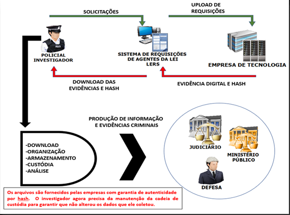
A cadeia de custódia constitui o pilar fundamental para garantir a validade jurídica das provas digitais, prevenindo o manuseio inadequado e assegurando a integridade dos dados desde sua obtenção até a apresentação em juízo. Tanto o Superior Tribunal de Justiça (STJ) quanto o Supremo Tribunal Federal (STF) já se manifestaram sobre a importância do manuseio adequado das provas digitais, com precedentes que reconhecem que a quebra da cadeia de custódia pode levar à invalidação de evidências cruciais e até mesmo à anulação de processos penais inteiros.
A legislação brasileira, em especial a Lei n.º 13.964/2019, conhecida como “Pacote Anticrime”, introduziu expressamente a disciplina da cadeia de custódia no Código de Processo Penal, detalhando as etapas para vestígios. Contudo, essa lei não esgotou o regramento específico para as provas digitais. Nesse contexto, a Lei n.º 12.965/2014, o “Marco Civil da Internet”, regula o sigilo de registros de acesso a aplicações de internet e comunicações privadas, exigindo ordem judicial para seu acesso e cumprimento da cadeia de custódia em todo o ciclo de vida dos dados.
Para guiar a aplicação desses princípios às evidências digitais, são amplamente utilizadas normas técnicas como a ABNT ISO/IEC 27037:2013, que estabelece diretrizes para a identificação, coleta, aquisição e preservação eficaz e legalmente aceitável dessas evidências, e a RFC 3227/2002 da IETF, que oferece diretrizes para coleta e arquivamento.
Diante desse cenário, este capítulo objetiva capacitar o policial investigador a atuar de forma técnica, eficaz e juridicamente válida na obtenção e preservação de evidências digitais, independentemente de sua formação pericial prévia.
A integridade da prova digital é inegociável. Para uma evidência ser conside rada válida em juízo, é preciso provar que ela não foi alterada ou corrompida desde o momento de sua coleta. É aqui que o hash desempenha papel fundamental.
“A mera documentação das hashes dos arquivos, obtidas a partir do espe lhamento de dispositivos eletrônicos apreendidos, não garante a integridade do material. Para validar a autenticidade e integridade da prova, é necessário comparar as hashes do arquivo espelhado com aquelas apresentadas no processo.”
Informativo de Jurisprudência n. 838 do STJ - 04 de fevereiro de 2025
O que é o Hash? O hash funciona como uma “impressão digital” única de um arquivo ou conjunto de dados. Trata-se de uma função matemática unidirecional que transforma dados de qualquer tamanho em uma saída de comprimento fixo e único, geralmente representada em formato hexadecimal. Qualquer alteração, por menor que seja - uma vírgula, um pixel, um bit - resultará em um hash com pletamente diferente, permitindo detecção imediata de modificações.
“Hash é uma função matemática que transforma qualquer
quantidade de dados (texto, arquivo, imagem) em um código
único de tamanho fixo. É impossível descobrir os dados originais
a partir do hash, mas qualquer alteração nos dados originais
resulta em um hash completamente diferente.”
Verificação de Autenticidade e Integridade: Ao comparar o hash gerado no momento da aquisição com o hash gerado posteriormente, confirmamos a autenticidade e integridade da evidência. Valores hash idênticos indicam prova intacta; valores diferentes revelam modificação ou corrupção.
Tipos Comuns: As funções hash criptográficas mais utilizadas incluem MD5, SHA256 e SHA512. Recomenda-se sempre usar algoritmos mais robustos como SHA256 ou SHA512, pois o MD5 já apresenta vulnerabilidades conhecidas.
Embora o hash seja gerado durante a extração da evidência pelas empresas de tecnologia, nem sempre é compartilhado de forma transparente com a autoridade solicitante. Solução: Para garantir a validade jurídica e a integridade da prova digital, é imperativo adotar as seguintes medidas:
O hash certificado seja obrigatoriamente compartilhado pelas empresas de tecnologia via ofício, diretamente com o Ministério Público ou Judiciário. Esta medida fundamental permite a verificação independente do hash, garantindo que o conteúdo original não foi alterado desde o momento em que foi extraído.
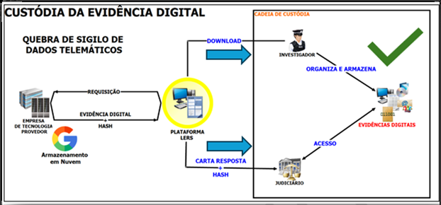
Quando a transparência falhar ou houver recusa no compartilhamento, a autoridade policial deve solicitar ordem judicial específica para compelir o fornecimento do hash certificado. Tal determinação é crucial para assegurar a transparência e a integridade do processo de verificação das evidências digitais, fortalecendo a cadeia de custódia e prevenindo qualquer questionamento sobre a autenticidade da prova em juízo.
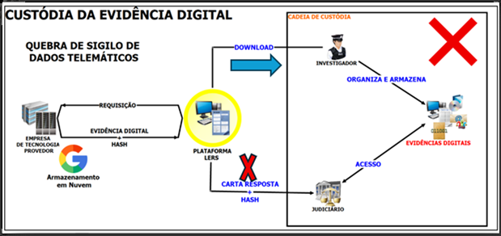
Lembre-se que o hash atua como uma “impressão digital” única do arquivo digital. Qualquer mínima alteração nos dados resultaria em um hash comple tamente diferente, revelando de imediato qualquer modificação. Portanto, a comparação do hash gerado na coleta (gerado diretamente pela empresa) com o hash existente no processo judicial é o mecanismo primordial para confirmar a autenticidade e a integridade da evidência. Embora empresas como Google, Apple e Microsoft geralmente afirmem que fornecem hashes ou manifestos para assegurar a integridade dos dados, a experiência prática demonstra que o compartilhamento efetivo com Judiciário e Ministério Público para uma validação independente nem sempre ocorre de maneira transparente.
Investigadores tendem a gerir individualmente o processo de aquisição, arquivamento e custódia conforme cognição própria, dificultando a integração de evidências e promovendo dispersão com alto risco de comprometimento. Solução: Implementar protocolos institucionais padronizados ou, quando não viáveis, criar padrões mínimos setoriais que garantam uniformidade nos procedimentos de todos os investigadores da unidade.
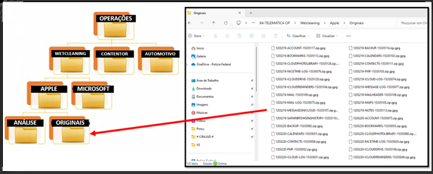
A preferência por dispositivos locais (pendrives, HDs externos pessoais) fragiliza a cadeia de custódia, aumentando riscos de perda, corrupção ou acesso não autorizado. Solução: Estabelecer local padronizado de armazenamento (servidor seguro, pasta compartilhada com controle de acesso, storage local tipo NAS), nomenclatura única para arquivos e rotinas de backup, eliminando definitivamente o uso de dispositivos pessoais. É fundamental sempre criar cópia para análise, mantendo íntegro o arquivo original, garantindo que a evidência primária permaneça inalterada durante todo o processo investigativo e preservando sua validade probatória.
A dependência da velocidade de internet, problemas de conectividade durante downloads e suscetibilidade a downloads incompletos podem exigir reinício do trabalho, gerando atrasos e desgaste operacional e até entrega de dados originais com arquivos corrompidos. Solução: Estabelecer protocolo específico para verificação obrigatória de integridade por meio de hash, uso de ferramentas de validação disponíveis na unidade e rotinas de conferência padronizadas. Implementar aplicativos ou ferramentas de apoio para download ininterrupto e continuação em caso de interrupção, garantindo maior eficiência e confiabilidade no processo de aquisição das evidências digitais.
Importante salientar o uso de conexão fornecida pelo próprio órgão e armazenar o material em pasta dentro da rede sob o domínio.
Como mencionado, a realidade impõe que o investigador, muitas vezes sem formação pericial em informática, seja o primeiro a lidar com a evidência digital. Este papel, embora fundamental, impõe desafios críticos que devem ser superados através da adoção de boas práticas específicas para preservar a cadeia de custódia. Ressaltamos que já existem modelos de relatórios difundidos para referência na construção de relatórios e pedidos.
O QUE FAZER:
Elabore informações claras quanto ao alvo, dados e período para subsidiar a representação da autoridade policial e, consequente mente, confecção das ordens judiciais. Para remoção de conteúdo: sempre indique a URL específica; nunca utilize URLs genéricas.
Google: Conta Google, IMEI/MEID; Microsoft: e-mail/Conta Microsoft, Gamertag Xbox; Apple: Número de Série, IMEI, Apple ID; Meta: nome de usuário, Facebook ID, número de telefone O QUE NÃO FAZER:
O QUE FAZER:
UFED Physical Analyzer (PA) ou Iped (Indexador e Processador de Evidências Digitais); Para indexar, analisar e correlacionar dados (JSON, CSV, HTML, VCARD, MBOX); Transforme dados em inteligência investigativa
Método de coleta; Data e hora; Nome do responsável; Descrição das ações realizadas;
O QUE NÃO FAZER:
A natureza sigilosa dos dados telemáticos, protegida pela Constituição Federal (art. 5º, X e XII) e pelo Marco Civil da Internet, exige, em regra, ordem judicial para o acesso ao conteúdo de comunicações privadas. No entanto, dados cadastrais (como qualificação, filiação, telefone e endereço) podem, em algumas hipóteses previstas em lei, ser requisitados diretamente pelo Delegado de Polícia ou membro do Ministério Público. A colaboração com as grandes empresas de tecnologia é essencial e ocorre por meio de plataformas e canais específicos. Importante ressaltar que todas as plataformas disponibilizam diretamente aos cadastrados em seus portais: cartilhas, instruções, treinamentos para o uso da plataforma e de como realizar as requisições. Além disso, muitos destes materiais são difundidos internamente, sendo explorados em treinamentos contínuos da instituição.
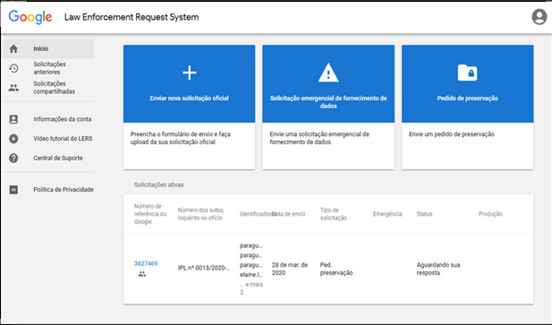
(+código internacional), CID/PUID, número completo do cartão de crédito, Gamertag Xbox/número de série, nome de usuário/ID Skype, número Skype/PSTN discado com data/hora/duração.
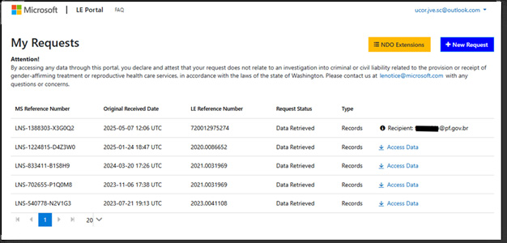
Celular + identificação do alvo, GUID, Apple ID ou DS ID, nome completo, telefone e endereço físico. O Apple ID e DS ID podem ser obtidos por ofício simples.
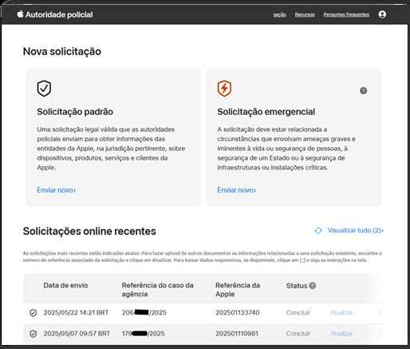
(válido por 90 dias) e outro com a chave de descriptografia. O material é entregue em formato GPG e acompanhado de hashes para garantir sua integridade. Por meio deles, é possível acessar o conteúdo requisitado, disponibilizado para download.
Messenger) e www.whatsapp.com/records (para WhatsApp). O acesso é realizado via e-mail institucional. As solicitações por ofício devem ser endereçadas à Meta Platforms, Inc. 1 Meta Way Menlo Park, CA 94025, United States.
Facebook ID, número de telefone com código de país, endereço de e-mail.
(+55-DDD-número);Group ID; Channels.
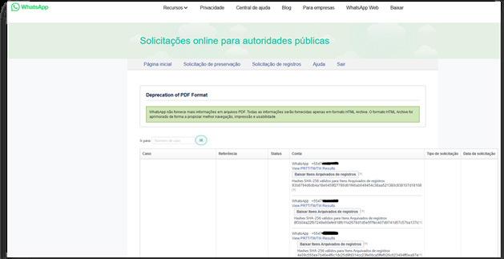
URL do conteúdo é crítica para ordens de remoção no Facebook/ Instagram.
Nesse contexto, foi desenvolvida recentemente uma plataforma digital de alcance global que viabiliza a obtenção de orientações procedimentais e o envio direto de requisições e documentos oficiais aos principais provedores de serviços de aplicação e conexão à internet. A iniciativa, concebida por ex-integrante de agências de segurança dos Estados Unidos, materializou-se na plataforma KODEX (https://app.kodexglobal.com/signin), cujo acesso requer cadastro prévio e posterior validação institucional pelo órgão de segurança pública ao qual o servidor está vinculado.
A plataforma KODEX representa importante ferramenta de cooperação internacional, facilitando o cumprimento dos procedimentos de Mutual Legal Assistance Treaty (MLAT) e auxílio direto previstos em tratados internacionais dos quais o Brasil é signatário, otimizando o tempo de resposta em investigações que demandam dados armazenados por provedores estrangeiros.
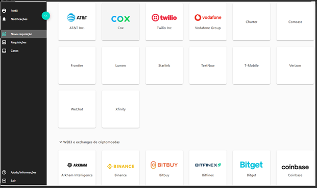
Acesso e Envio: a maioria das empresas de tecnologia oferece portais online específicos para autoridades policiais e judiciárias. O acesso é geralmente reali zado via e-mail institucional, mediante cadastro prévio. As solicitações devem ser endereçadas formalmente à sede da empresa, conforme informações disponíveis em seus respectivos portais ou políticas de transparência.
Tipos de Solicitação: Preservação de dados (períodos variáveis, geralmente prorrogáveis), Solicitação de registros (via ofício ou ordem judicial), Pedidos de emergência (para casos de risco iminente), Remoção de conteúdo (quando aplicável).
Dados Solicitáveis Mediante ofício, é possível requisitar dados cadastrais bási cos (nome, telefone, e-mail, data de criação da conta). E dados mais completos com ordem judicial, registros de acesso e conexão (endereços IP, timestamps), informações de pagamento (quando disponíveis) e remoção de conteúdo específico (sempre com URL ou identificador exato do conteúdo).
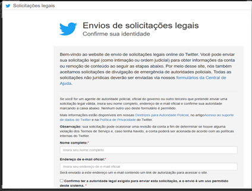
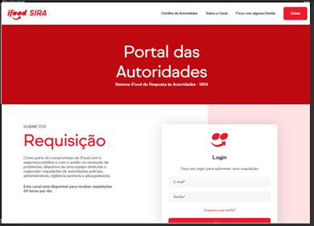
O volume e a complexidade dos dados entregues pelas empresas (em formatos diversos como JSON, CSV, HTML, GPG, MBOX e vários outros) tornam a análise manual impraticável. O uso de ferramentas de indexação e análise forense digital é indispensável para organizar, filtrar e correlacionar essas informações de forma técnica e juridicamente válida, auxiliando o investigador a manter a integridade da prova. A análise deve ser sempre realizada em uma cópia dos dados recebidos e não no original. As principais ferramentas disponíveis são:
Cellebrite UFED: Uma das ferramentas mais reconhecidas globalmente, usada por agências como o FBI e a Polícia Federal do Brasil para extrair e analisar dados de mais de 17 mil tipos de dispositivos, mesmo que estejam bloqueados ou criptografados.
Outras ferramentas importantes:
A utilização dessas ferramentas é vital para transformar dados brutos em inte ligência investigativa, garantindo a documentação metodológica e a preservação da cadeia de custódia, aspectos essenciais para a validade jurídica das provas digitais. É crucial compreender a distinção funcional entre as diferentes ferramentas empregadas na investigação digital.
A investigação criminal moderna é intrinsecamente digital. Para o policial investigador poder atuar eficientemente e, acima de tudo, juridicamente sólido, é imperativo dominar os princípios da cadeia de custódia digital. A padronização de procedimentos, o registro metodológico de cada etapa, a utilização de identi ficadores precisos e o emprego de ferramentas forenses adequadas são medidas que não somente otimizam o trabalho policial, mas garantem a validade e a confiabilidade das provas em juízo.
A formação contínua e a atualização sobre as tecnologias e legislações pertinentes são essenciais para a polícia poder enfrentar os desafios dos crimes digitais, assegurando que a justiça seja feita com base em evidências íntegras e irrefutáveis.
O aplicativo do WhatsApp configura-se, atualmente, numa das principais fontes de metadados de comunicação em investigações policiais. Para fins deste tópico, consideraremos “análise WhatsApp” como o exame dos dados de conta, grupos, registros de acesso e interações que o provedor disponibiliza às autoridades de persecução criminal, a partir de ordens judiciais e ofícios válidos. Esses dados incluem, entre outros, informações de grupos (criação, descrição, assunto, número de integrantes) e registros de IP com timestamps31 eventualmente associados a sessões ou atividades específicas, além de outros dados disponibilizados pelo WhatsApp (quando existentes).
A obtenção de informações junto ao WhatsApp deve observar, estritamente, os parâmetros legais. O marco jurídico central encontra-se na Lei nº 12.965/2014 (Marco Civil da Internet), que estabelece direitos, garantias e deveres relacionados ao uso da rede, prevendo a necessidade de ordem judicial para o acesso a dados que revelem a intimidade do usuário. Complementarmente, a Lei nº 9.296/1996 disciplina a interceptação de comunicações telefônicas e telemáticas, impondo requisitos formais rigorosos para a legalidade da medida.
É fundamental compreender que o WhatsApp adota, por padrão, criptografia ponta a ponta (end-to-end encryption). Em termos práticos, isso significa que:
31 Registros de IP com timestamps são um registro de data e hora associado a um endereço IP, indicando quando um determinado dispositivo ou sistema utilizou ou acessou um recurso de rede.
conversa, os aplicativos dos interlocutores estabelecem uma sessão
com chaves de sessão derivadas (protocolo de duplo ratchet/curvas
elípticas);
Consequência dessa tecnologia do WhatsApp: mesmo diante de ordem judicial, o provedor não detém o conteúdo em formato legível para entregar. Destarte, o objeto habitual das representações policiais são metadados e registros técnicos vinculados à conta e suas respectivas interações (e não o teor das mensagens).
No Brasil, a implementação de ordens judiciais ou de ofícios policiais com o respectivo provedor ocorre pelo portal Records/WhatsApp32, observando-se, em linhas gerais, três possibilidades de medidas:
Assim, o foco da cooperação entre autoridades policiais e o WhatsApp recai sobre os metadados, ou seja, os registros técnicos e administrativos que descrevem a utilização da conta e as interações do usuário, sem envolver o conteúdo das mensagens protegidas por criptografia ponta a ponta. É a partir desses elementos que a investigação consegue identificar padrões de uso, estabelecer vínculos entre investigados e reconstruir a dinâmica criminosa, sempre dentro dos limites legais e técnicos existentes.
Nesse contexto, o Sistema Análise Telefônica 2 (AT2) desempenha papel relevante, ao compilar automaticamente as principais informações telefônicas e alguns dados do WhatsApp.
A efetividade da análise telemática reside justamente na capacidade criativa do investigador de transcender os dados brutos, contextualizando-os com vigilância, movimentações bancárias, deslocamentos geográficos, padrões de comunicação e apoio de outras ferramentas investigativas. O AT2 ajuda a entregar a estrutura 32 https://www.whatsapp.com/records/login/?locale=pt_BR. inicial, mas cabe ao analista transformar essa base em conhecimento estratégico, capaz de revelar vínculos ocultos, dinâmicas hierárquicas e a lógica operacional das organizações criminosas.
Os pedidos de preservação constituem medida voltada a evitar a perda de evidências digitais, resguardando registros de contas por período determinado. O Marco Civil da Internet (Lei n.º 12.965/2014) prevê a possibilidade de preservação por até 90 dias, prorrogáveis mediante decisão judicial.
Entretanto, conforme entendimento da 2ª Turma do Supremo Tribunal Federal no HC 222141 em 2024, a adoção dessa providência depende de autorização judicial, sob pena de comprometer a validade da prova. Assim, a mera expedição de ofício pelo Delegado de Polícia Federal diretamente ao provedor poderá ser considerada irregular, abrindo margem para questionamentos processuais.
Dessa maneira, mostra-se mais eficaz representar diretamente pela obtenção dos dados, e não somente pela sua preservação. Isso porque a decisão judicial que defere a quebra já garante a prova de forma lícita e íntegra, dispensando uma futura representação sobre os mesmos elementos. Além disso, assegura-se que as informações preservadas e posteriormente fornecidas tenham plena validade jurídica, evitando nulidades que poderiam enfraquecer a investigação.
Importa frisar que a preservação, por si só, não implica fornecimento imediato de informações, mas tão somente resguarda sua integridade até que a ordem judicial seja proferida.
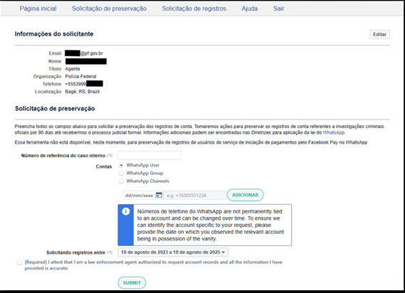
Figura 95-Solicitação de preservação de dados do WhatsApp
Os pedidos emergenciais são cabíveis em situações excepcionais que envol vam risco iminente para uma criança, ou ainda risco de morte ou de ferimentos graves para qualquer pessoa, nas quais a pronta divulgação de informações seja indispensável para a preservação da vida. Nesses casos, as autoridades policiais podem utilizar o sistema de solicitações online para autoridades públicas a fim de encaminhar a requisição. Para garantir o tratamento prioritário, no campo “Processo Judicial” utilizar “Emergency” e no campo “Additional Context” reforçar com a palavra “EMERGÊNCIA” e descrever a situação real de maneira detalhada para o cumprimento mais rápido possível. Ressalta-se que somente ofícios assina dos por autoridade policial são analisados e respondidos pelo provedor.
A fundamentação jurídica encontra amparo no Marco Civil da Internet (Lei 12.965/2014), que autoriza a atuação em situações de urgência, e também nas próprias políticas internas da Meta/WhatsApp, alinhadas a padrões internacionais de cooperação. A excepcionalidade dessa via exige que a solicitação seja devida mente formalizada pela autoridade policial responsável, descrevendo de maneira clara e objetiva os fatos que configuram a ameaça à vida ou à segurança da vítima.
As informações disponibilizadas nessa modalidade não incluem o conteúdo das mensagens, mas sim um conjunto restrito de metadados recentes, suficientes para a atuação imediata.
Uma vez superada a urgência, a continuidade da investigação depende da obtenção de ordem judicial regular. Por isso, é prática recomendada que, após a atuação emergencial, a autoridade policial reforce o pedido com decisão formal, vinculando o novo requerimento ao caso já existente no Records.
Do ponto de vista prático, os pedidos emergenciais são particularmente úteis em situações como:
Trata-se, portanto, de um mecanismo cautelar e excepcional, voltado à preservação de vidas, que deve ser utilizado com parcimônia e responsabilidade, sempre documentando a motivação e os procedimentos adotados.
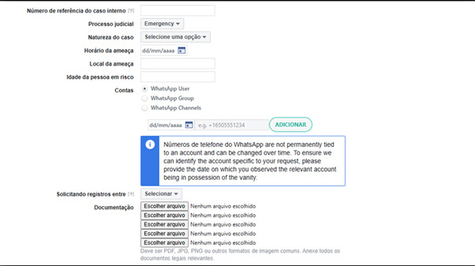
Incluir Documento
Figura 96-Solicitação de pedido emergencial
Além do WhatsApp, diversas plataformas de mensagens criptografadas ganharam popularidade entre usuários e, em alguns casos, são utilizadas para coordenar atividades ilícitas. Cada aplicativo adota um modelo específico de criptografia e retenção de dados, impactando tanto a privacidade dos usuários quanto a capacidade de cooperação com autoridades investigativas.
Plataformas como Telegram, Signal, Threema e outras apresentam caracte rísticas técnicas distintas que afetam diretamente as possibilidades investigativas. Enquanto alguns aplicativos utilizam criptografia cliente-servidor e mantêm acesso ao conteúdo das mensagens e metadados (como endereços IP e números de telefone), outros implementam criptografia de ponta a ponta por padrão e adotam políticas rigorosas de minimização de dados, armazenando somente informações básicas como data de criação da conta e último acesso.
As políticas de cooperação com autoridades também variam significativamente entre elas: algumas empresas colaboram mediante ordens judiciais devidamente fundamentadas, fornecendo os dados disponíveis em seus sistemas, enquanto outras estruturam-se deliberadamente para não reter informações que possam ser compartilhadas. Em casos excepcionais, operações policiais coordenadas inter nacionalmente conseguiram comprometer sistemas considerados ultrasseguros, obtendo acesso direto ao conteúdo das comunicações e não somente a metada dos, o que representou avanços importantes na persecução penal transnacional.
Cada plataforma apresenta características técnicas, políticas de privacidade e modelos de cooperação distintos, resultando em diferentes níveis de acessibi lidade para investigações policiais. O conhecimento dessas particularidades é fundamental para o planejamento estratégico de ações investigativas e para a compreensão dos limites e possibilidades técnicas em cada caso.
O endereço IP (Internet Protocol) é um identificador único atribuído a cada dispositivo conectado à internet, permitindo a comunicação entre diferentes equipamentos em rede. Na investigação criminal, a análise de IPs representa uma ferramenta essencial para rastrear a origem e o destino de conexões telemáticas, vinculando atividades virtuais a usuários específicos.
No princípio, a rede mundial de internet utilizava o padrão IPv4 (Internet Protocol version 4), responsável por endereçar cerca de 4,29 bilhões de combina ções possíveis. Esse número, embora pareça elevado, mostrou-se insuficiente diante da rápida expansão da internet, da massificação dos dispositivos conectados e do surgimento da chamada “Internet das Coisas”. O esgotamento dos blocos dispo níveis de IPv4 tornou-se inevitável, motivando a criação de um novo protocolo, o IPv6, capaz de atender às demandas atuais e futuras da conectividade global.
O padrão IPv6 (Internet Protocol version 6) surgiu como evolução natural para suprir a limitação do IPv4. Diferentemente do modelo anterior, que utiliza endereços de 32 bits, o IPv6 trabalha com endereços de 128 bits, possibilitando uma quantidade praticamente inesgotável de combinações (cerca de 3,4 x 10³⁸ endereços). Essa expansão garante que cada dispositivo conectado possa ter um identificador único, dispensando soluções paliativas como o uso intensivo do NAT (Network Address Translation) ou do CGNAT (Carrier Grade NAT). Além disso, o IPv6 trouxe melhorias significativas, como maior eficiência no roteamento, autoconfiguração automática dos dispositivos e suporte nativo a protocolos de segurança, tornando a infraestrutura da internet mais robusta e preparada para o crescimento exponencial do tráfego de dados.
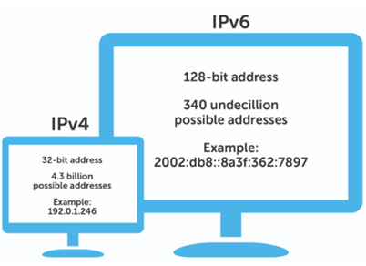
No contexto investigativo, é importante compreender também o papel das portas lógicas e do CGNAT (Carrier Grade Network Address Translation). As portas lógicas são identificadores numéricos que, associados ao endereço IP, distinguem conexões simultâneas realizadas por um mesmo dispositivo. Essa informação torna-se essencial quando se trata do IPv4, já que, em razão da escassez de endereços, provedores de internet passaram a adotar o CGNAT.
Nessa técnica, um único endereço IPv4 público é compartilhado por diversos usuários, sendo a porta lógica o elemento que permite individualizar qual assinante estava vinculado a determinada comunicação em um dado momento. Assim, na prática, um IP isolado sem a respectiva porta lógica pode ser insuficiente para identificar o usuário responsável, reforçando a necessidade de ofícios bem estruturados às operadoras, para a investigação obter resultados efetivamente úteis e consistentes.
Para facilitar a compreensão, imagine um prédio com somente um endereço postal (um único número na rua), mas dentro dele existem dez apartamentos diferentes. Se alguém manda uma carta somente para o endereço do prédio, não é possível saber para qual morador ela se destinava. Para identificar corretamente o destinatário, seria necessário saber o número do apartamento.
O CGNAT funciona semelhantemente: vários usuários compartilham um mesmo endereço IP público (o “endereço do prédio”), e a porta lógica funciona como o “número do apartamento”, permitindo diferenciar cada conexão individual.
Na investigação policial, isso significa que, se o provedor de internet informar somente o IP sem a porta lógica, pode haver dezenas ou centenas de pessoas associadas ao mesmo endereço naquele momento — dificultando ou até invia bilizando a identificação do investigado.
Exemplo prático: em um caso de fraude bancária, os registros do internet banking mostraram que o acesso do criminoso partiu do IPv4 200.100.50.25. Esse mesmo IP, entretanto, era usado simultaneamente por mais de 200 clientes de uma operadora devido ao CGNAT. Apenas após requisitar à operadora a identificação da porta lógica junto à data e hora exata da conexão é que foi possível individualizar o usuário responsável, vinculando a ação ao investigado correto.
A solução foi solicitar à operadora, além do IP, também a porta lógica e o horário exato da conexão. Com essas informações, o provedor conseguiu identificar precisamente qual usuário, dentre todos os que dividiam o mesmo IP, estava conectado àquele instante — permitindo vincular a ameaça ao investigado específico.
Já em outra investigação de crimes cibernéticos, o provedor informou que o login suspeito ocorreu a partir do endereço IPv6 2804:14d:5c01:abcd:9 8ef:0021:3456:7890. Nesse caso, não havia compartilhamento com outros clientes, pois cada dispositivo recebeu um endereço público exclusivo. Assim, bastou cruzar o IP com a data e hora para identificar diretamente o assinante responsável, sem necessidade de portas lógicas adicionais.
Ou seja, no IPv4 com CGNAT, a porta lógica é indispensável para individualizar o usuário. Já no IPv6, cada conexão já vem com um endereço único, simplificando a investigação e reduzindo a margem de erro. Segue um diagrama demonstrando um IPv4 utilizado por duas residências distintas.
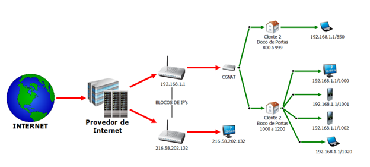
No Brasil, a adoção do IPv6 vem ocorrendo gradualmente, mas constante mente, impulsionada principalmente por grandes operadoras de telecomunicações e provedores de conteúdo. Estima-se que mais da metade do tráfego de internet do país já utilize o novo protocolo, reduzindo a dependência do CGNAT e ampliando a precisão das investigações.
Com o IPv6, cada dispositivo pode receber um endereço público único, eliminando a necessidade de compartilhamento massivo de endereços como ocorre no IPv4. Para o trabalho policial, isso representa um avanço significativo, ao facilitar a correlação entre atividades virtuais e usuários específicos, diminuindo os riscos de sobreposição de conexões ou de falsas associações decorrentes do uso coletivo de um mesmo IP. O mapa abaixo demonstra a adoção de IPv6 no mundo conforme os dados do Google. Quanto mais forte for a cor verde do país, mais adoção do IPv6.
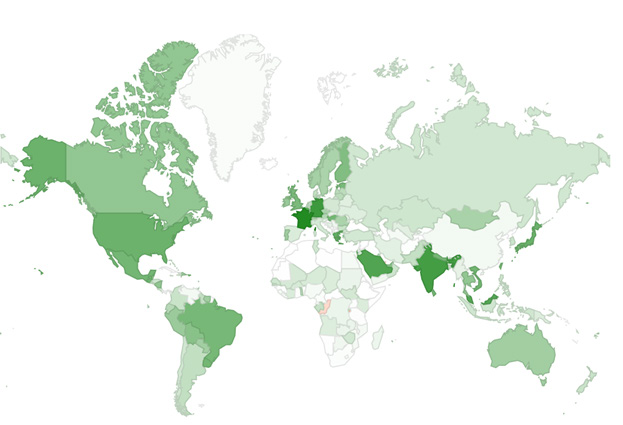
Dessa forma, é fundamental que o investigador tenha clareza sobre a diferença entre o IPv4 e o IPv6 ao elaborar ofícios e analisar respostas de provedores. No IPv4 com CGNAT, a porta lógica é elemento indispensável para a correta individualização do usuário, enquanto no IPv6 o endereço público já cumpre esse papel de forma autônoma. Por isso, recomenda-se sempre solicitar que os registros fornecidos pelas operadoras informem não somente o IP e o horário em UTC, mas também a porta de origem, quando aplicável. A atenção a esse detalhe técnico evita erros de atribuição, assegura maior precisão na identificação dos investigados e fortalece a robustez da prova colhida.
A análise de endereços IP não se limita às operadoras de conexão, responsá veis por vincular cada endereço a um assinante. Diversos provedores de serviços (ou serviços de aplicação) – como redes sociais, aplicativos de mensagens e plataformas financeiras – também armazenam registros que podem ser decisivos para a investigação policial.
No caso dos provedores de internet (ISPs), as informações mais comuns são os registros de conexão, que indicam qual usuário estava associado a determinado IP (e porta lógica, quando se tratar de IPv4 sob CGNAT) em um momento específico. Esses dados permitem individualizar o assinante responsável pela navegação, funcionando como elo inicial para correlacionar outras evidências.
Já nas redes sociais e aplicativos de mensagens (como WhatsApp, Facebook e Instagram), os registros de acesso a aplicações incluem geralmente o endereço IP, data e hora de login, além de informações técnicas adicionais, como o tipo de dispositivo e o sistema operacional. Tais elementos possibilitam identificar a origem de publicações, mensagens e acessos suspeitos, além de cruzar informações com dados fornecidos pelos provedores de conexão.
As instituições bancárias e plataformas financeiras também desempenham papel importante. É comum manter logs de acesso a contas, incluindo endereços IP, geolocalização aproximada, dispositivo utilizado e histórico de autenticação. Essa base de dados é particularmente relevante em crimes de fraude, lavagem de dinheiro e estelionato, permitindo reconstruir a rota de acessos que resultaram em transações suspeitas.
Assim, ao reunir informações provenientes de diferentes fontes — provedores de conexão, aplicações de internet e instituições financeiras — o investigador consegue correlacionar eventos e reduzir incertezas, fortalecendo a prova digital e delimitando com maior precisão a autoria das condutas investigadas.
Quanto maior for a quantidade de endereços IPs obtidos junto às operadoras de conexão, provedores de aplicativos e instituições financeiras, mais robusta será a análise. O sistema Análise Telefônica 2 (AT2) desempenha papel central nesse processo, ao permitir a importação dos dados fornecidos pelas empresas — em especial WhatsApp, Facebook e Instagram — e organiza automaticamente os registros, destacando os IPs mais utilizados por cada investigado.
É cada vez mais comum investigados brasileiros usarem WhatsApp com número estrangeiro (ex.: +54 da Argentina) para cometer crimes no Brasil. A ideia deles é dificultar a investigação por parte da polícia, pois para conseguir os dados cadastrais do titular da linha estrangeira, costuma ser necessário pedido de cooperação internacional.
Ao elaborar um ofício para requisitar informações de provedores de internet, é importante que a solicitação seja sempre endereçada ao setor jurídico da empresa, garantindo a formalidade do pedido e evitando falhas na tramitação. O documento deve conter a identificação da autoridade policial, a fundamentação legal que respalda a requisição (por exemplo, o art. 10, §3º, do Marco Civil da Internet para dados cadastrais, ou o art. 15 da Lei 12.850/2013 em casos de organizações criminosas) e a especificação clara dos dados desejados. Sempre que houver necessidade de identificar conexões, deve-se indicar o endereço IP acompanhado da data e hora exata em UTC-3, bem como, no caso de IPv4 sob CGNAT, a porta lógica utilizada.
Adicionalmente, faz-se necessário alertar para uma realidade prática: muitos policiais federais iniciam suas atividades em unidades de fronteira, onde frequentemente existem somente pequenos provedores de internet locais. Nessas situações, deve-se avaliar se os proprietários da empresa possuem proximidade com os investigados, o que poderia comprometer a investigação. Diante desse risco, recomenda-se cautela redobrada, podendo ser mais seguro requisitar informações de forma judicializada ou buscar provedores maiores que tenham atuação na região.
A VPN (Virtual Private Network) é um serviço que cria uma espécie de “túnel” criptografado entre o dispositivo do usuário e a internet. Ao utilizá-la, o investigado deixa de se conectar diretamente ao provedor de internet local, passando antes por um servidor intermediário localizado em outra cidade ou até em outro país. O efeito prático é a ocultação do endereço IP real do usuário, que passa a ser substituído pelo IP do servidor da VPN.
Do ponto de vista investigativo, isso representa um desafio, pois os registros obtidos em aplicativos ou serviços online não refletirão o IP da residência ou da operadora de celular do investigado, mas sim o IP do provedor de VPN. Dessa forma, o cruzamento com operadoras de internet nacionais pode não trazer resultado imediato.
Por fim, cabe destacar que o uso de VPN é cada vez mais comum entre investigados, não somente para ocultar práticas ilícitas, mas também para burlar restrições de conteúdo e aumentar a privacidade. Para o investigador, o ponto central é reconhecer rapidamente a presença de uma VPN, registrar essa condição no relatório e adotar medidas complementares, como solicitar preservação de dados adicionais, buscar cooperação internacional ou reforçar o cruzamento com outras fontes de prova (ERBs, registros bancários, câmeras de segurança etc.).
Um site para consultas, aparentemente confiável, que apresenta a informação do uso de VPN e proxy é o https://www.ipqualityscore.com/.
O avanço tecnológico modificou substancialmente a forma como os indivíduos armazenam informações. Se antes era comum a guarda de documentos, fotos e arquivos somente em mídias físicas (discos rígidos, CDs, pen drives), atualmente a tendência predominante é a utilização de serviços de armazenamento em nuvem, oferecidos por grandes empresas de tecnologia.
Esse tipo de solução possibilita que o usuário acesse seus dados de qualquer localidade, bastando para isso uma conexão com a internet. Plataformas como Google Drive, iCloud, OneDrive, Dropbox, entre outras, são amplamente utilizadas tanto para fins pessoais quanto profissionais.
Do ponto de vista investigativo, tais serviços possuem especial relevância, pois neles podem estar armazenados documentos que comprovem planejamento de crimes, comunicações, registros contábeis ilícitos ou fotografias e vídeos de interesse da investigação.
O acesso a dados armazenados em nuvem encontra amparo na Lei n.º 12.965/2014 (Marco Civil da Internet), que estabelece a necessidade de ordem judicial para obtenção de conteúdos de comunicações privadas, inclusive os armazenados remotamente.
Entretanto, a própria legislação autoriza o delegado de polícia a requisitar, sem prévia autorização judicial, os dados cadastrais dos usuários (qualificação, filiação e endereço), tanto junto a provedores de internet, quanto em empresas de tecnologia.
Assim, é essencial distinguir:
Para o investigador saber para qual empresa deve dirigir o ofício, é essencial primeiro identificar o sistema operacional do aparelho utilizado pelo investigado. Uma forma simples e prática é utilizar o site IMEI.INFO (https://www.imei.info/ calc/), que permite verificar, a partir do número IMEI, o modelo do dispositivo e se ele pertence ao sistema operacional Android ou iOS. Confirmada a natureza do aparelho, direciona-se corretamente a solicitação: se o dispositivo for Android, os dados de nuvem estarão vinculados a uma conta Google, devendo o pedido ser encaminhado ao Google por meio da plataforma LERS; se for um iPhone, os dados estarão associados a uma conta Apple.
Uma vez recebidos os pacotes fornecidos pelas empresas de tecnologia, seja pelo Google, Apple ou Microsoft, o investigador se depara com um grande volume de arquivos em formatos técnicos (JSON, CSV, HTML, GPG, MBOX etc.), que não são intuitivos para leitura direta. Nesse cenário, a simples abertura manual dos arquivos é inviável, tanto pela quantidade, quanto pela necessidade de manter a cadeia de custódia. É por isso que se torna indispensável o uso de ferramentas de indexação e análise forense digital, que permitem organizar, filtrar e correlacionar os dados de forma técnica e juridicamente válida.
Cellebrite UFED Physical Analyzer (PA)
Entre as ferramentas mais utilizadas no âmbito da Polícia Federal destaca-se o Cellebrite UFED Physical Analyzer (PA), software israelense desenvolvido para análise avançada de evidências digitais. Com ele, é possível importar diretamente os pacotes fornecidos por Google, Apple ou Microsoft, validar os hashes de inte gridade e organizar as informações em estruturas de fácil consulta. O Cellebrite UFED PA converte milhares de arquivos brutos em uma base pesquisável, onde é viável navegar por linhas do tempo, identificar comunicações, georreferenciar fotografias e reconstruir atividades do investigado.
O grande diferencial dessas ferramentas é a capacidade de correlação. Outro recurso relevante é a possibilidade de realizar buscas avançadas e marcação de evidências. O investigador pode criar filtros por palavras-chave, números de telefone, endereços de e-mail ou coordenadas geográficas, reduzindo rapidamente o universo de análise para aquilo que é realmente pertinente ao inquérito. Além disso, é possível destacar eventos, anexar notas explicativas e gerar relatórios padronizados que podem ser inseridos diretamente nos autos.
No aspecto da cadeia de custódia, o uso do Cellebrite traz segurança adicional. O software preserva os arquivos originais, enquanto a análise é feita em uma cópia de trabalho. Cada operação gera registros de auditoria, e os relatórios são acompanhados de hashes que comprovam a integridade do material. Dessa forma, caso a defesa solicite acesso aos mesmos dados, é possível fornecer cópias autenticadas com garantia de que não houve nenhuma manipulação.
Embora o Cellebrite seja a ferramenta mais difundida, outras soluções também são utilizadas em perícias digitais, como o Oxygen Forensics Detective e o MSAB XRY, que possuem funções semelhantes de indexação e análise. O importante é que, independentemente da tecnologia empregada, ela consiga organizar gran des volumes de dados telemáticos, preservar a integridade da prova e oferecer relatórios compreensíveis e reprodutíveis para o processo judicial.
Iped (Indexador e Processador de Evidências Digitais)
O Iped é um software brasileiro, desenvolvido por integrantes da Polícia Federal, destinado à indexação e análise de grandes volumes de dados digitais. Gratuito e de código aberto, tornou-se uma das principais ferramentas de investigação forense no país, sendo utilizado tanto em apreensões de mídias físicas quanto na análise de arquivos fornecidos por empresas como Google, Apple e Microsoft.
Na prática, é comum que os pacotes recebidos do Google ou da Apple sejam primeiramente indexados e categorizados no Cellebrite Physical Analyzer, que possui parsers específicos para reconstrução de aplicativos e estruturação inicial dos dados. A partir daí, gera-se um relatório, que posteriormente é indexado no Iped. Esse fluxo de trabalho garante que a riqueza de artefatos extraída pelo Cellebrite seja preservada, mas que a análise detalhada seja efetuada no ambiente mais ágil e flexível do Iped.
Atualmente, muitos investigadores têm optado por realizar suas análises diretamente no Iped, mesmo quando usam o Cellebrite somente como etapa preliminar de parsing. Isso porque o Iped possui funcionalidades avançadas que o colocam em vantagem: transcreve áudios de forma quase perfeita, inclusive com pontuação, faz OCR automático em imagens (reconhecendo textos em fotos e documentos escaneados), suporta o trabalho em multievidências (permitindo pesquisar simultaneamente em diferentes fontes) e oferece a possibilidade de criar marcadores de evidências, que facilitam a navegação e organização dos achados.
Outro ponto de destaque é a leveza e fluidez da navegação. Enquanto outras ferramentas podem ser mais pesadas e lentas ao processar grandes volumes de informação, o Iped se mostra mais eficiente, tornando a análise menos demorada e mais intuitiva.
Assim, o Iped consolidou-se como um dos principais aliados da investigação digital, sendo hoje considerado por muitos investigadores como a ferramenta de análise preferencial em detrimento de soluções comerciais.
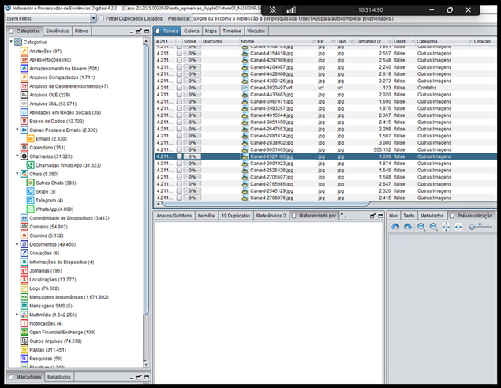
Figura 107 - Interface do Iped.
Podemos concluir então que a análise de dados telemáticos em grande escala, tal como os pacotes entregues por Google, Apple ou Microsoft, somente se torna viável na prática policial por meio do uso de softwares forenses especializados como o Cellebrite Physical Analyzer (PA) ou o Iped. Sem essas ferramentas, o volume e a complexidade dos arquivos tornariam a investigação extremamente lenta, fragmentada e sujeita a falhas humanas.
Tanto o PA quanto o Iped permitem não somente transformar dados brutos em informações inteligíveis e pesquisáveis, mas também garantem que todo o processamento seja feito de forma metodologicamente documentada, preservando a cadeia de custódia em cada etapa. Essa preservação é essencial, ao assegurar que os arquivos originais permaneçam íntegros e disponíveis para auditoria, inclusive para eventual acesso da defesa, eliminando riscos de alegações de manipulação ou nulidade processual. Desse modo, a atuação do policial federal encontra respaldo técnico e jurídico sólido, permitindo que provas digitais de alta complexidade sejam incorporadas aos autos de maneira clara, confiável e juridicamente válida.